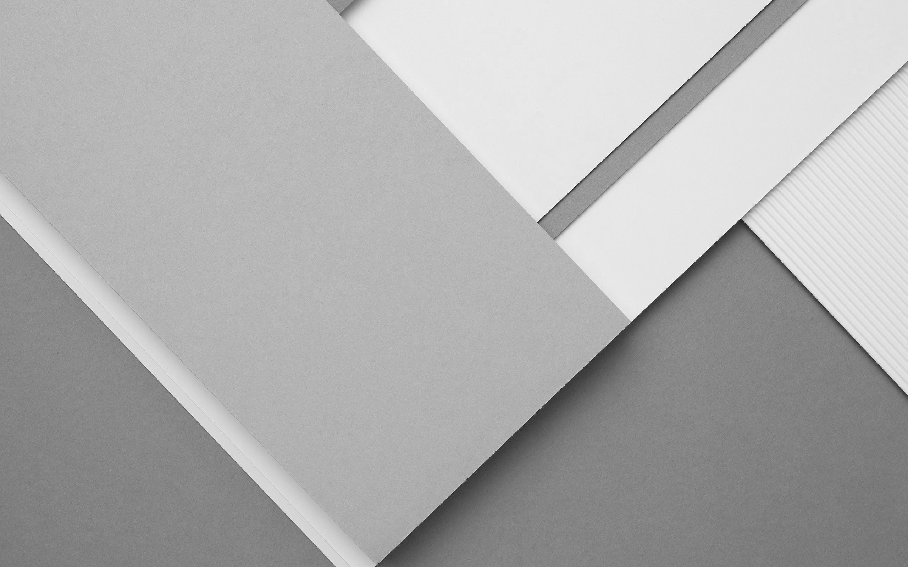

<mat-sidenav-container>
  <mat-sidenav #sideNav mode="over">
    <app-sidenav></app-sidenav>
  </mat-sidenav>
  <mat-sidenav-content>
    <app-header></app-header>
    <section id="body-content">
      
      <router-outlet></router-outlet>
    </section>
    <app-footer></app-footer>
  </mat-sidenav-content>
</mat-sidenav-container>